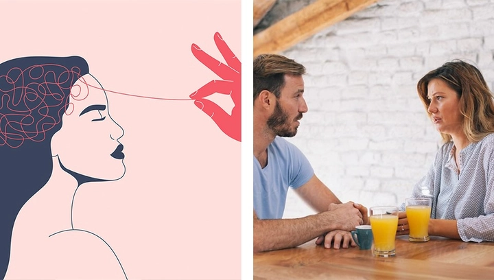

Thao túng tâm lý trong tình yêu - khi mối quan hệ tình cảm trở nên độc hại
Trong cuộc sống hiện đại, tình yêu không chỉ là sự đồng điệu cảm xúc mà còn có thể là môi trường tiềm ẩn những áp lực tinh thần và thao túng tâm lý. Nhiều người trải qua các mối quan hệ mà bản thân dần mất tự tin, nghi ngờ khả năng quyết định hay bị kiểm soát trong cách suy nghĩ và hành vi.
Thao túng tâm lý trong tình yêu không phải lúc nào cũng rõ ràng, đôi khi ẩn dưới những lời ngọt ngào, sự quan tâm quá mức hoặc hứa hẹn yêu thương. Việc nhận biết và hiểu rõ hiện tượng này là bước đầu quan trọng để xây dựng mối quan hệ lành mạnh, bảo vệ tinh thần và duy trì sự độc lập cá nhân.
Nếu bạn đang nghi ngờ bản thân đang trong một mối quan hệ bị đối phương thao túng tâm lý thì nhất định không thể bỏ qua bài phân tích sau của TrithucWorld
1. Định nghĩa thao túng tâm lý trong tình yêu
Thao túng tâm lý là hành vi mà một người sử dụng các công cụ tinh vi như lời nói, hành động hoặc cảm xúc để kiểm soát, chi phối và định hướng suy nghĩ, cảm xúc cũng như hành vi của đối phương nhằm phục vụ lợi ích cá nhân. Trong tình yêu, thao túng không phải lúc nào cũng hiển hiện rõ ràng; nó có thể xuất hiện dần dần và tinh vi, khiến người bị thao túng khó nhận ra.
Ví dụ, một người có thể dùng lời khen, sự quan tâm quá mức hoặc hứa hẹn yêu thương để gây áp lực vô hình, khiến bạn tự đặt bản thân dưới sự điều khiển của họ. Họ cũng có thể đổ lỗi khi xảy ra xung đột hoặc làm bạn nghi ngờ giá trị, cảm xúc và quyết định của chính mình. Theo thời gian, những hành vi này có thể khiến mối quan hệ trở nên mất cân bằng, thiếu tôn trọng và gây tổn hại nghiêm trọng đến tinh thần của người bị thao túng.
Hiểu rõ định nghĩa và bản chất của thao túng tâm lý là bước đầu quan trọng để nhận diện các hành vi tiêu cực, tự bảo vệ bản thân và thiết lập ranh giới lành mạnh trong tình yêu.
2. Các dấu hiệu nhận biết người thao túng
Nhận diện người thao túng tâm lý là chìa khóa để phòng tránh tổn thương lâu dài. Một số dấu hiệu phổ biến bao gồm:
-
Kiểm soát hành vi và quyết định: họ muốn can thiệp vào mọi khía cạnh của cuộc sống bạn, từ việc bạn gặp gỡ ai, tham gia hoạt động gì, đến cách bạn chi tiêu hay thời gian dành cho bản thân.
-
Ghen tuông thái quá: thường xuyên nghi ngờ mọi hành động, tin nhắn hoặc mối quan hệ xã hội của bạn, đôi khi biến những mối quan hệ bình thường thành lý do để phê phán hoặc giám sát.
-
Đổ lỗi vô cớ: bất cứ vấn đề gì xảy ra trong mối quan hệ đều được quy kết là lỗi của bạn, khiến bạn cảm thấy tội lỗi, lo lắng hoặc sợ đưa ra quyết định.
-
Thao túng cảm xúc: sử dụng im lặng, giận dỗi, lời khen giả tạo hay hứa hẹn để điều khiển cảm xúc của bạn, khiến bạn phụ thuộc và mất tự chủ trong suy nghĩ.
-
Thay đổi hành vi hoặc lối sống của bạn: bạn bắt đầu bỏ sở thích, hạn chế mối quan hệ với người thân, bạn bè, hoặc ưu tiên nhu cầu của họ hơn chính mình để vừa lòng họ.
Nhận biết sớm những dấu hiệu này giúp bạn giữ vững sự tự chủ, bảo vệ tinh thần và tránh rơi vào vòng lặp cảm xúc tiêu cực, đồng thời là bước quan trọng để xây dựng một mối quan hệ lành mạnh, tôn trọng lẫn nhau. Nếu trong tình yêu, đối phương có những dấu hiệu trên, hãy tìm cách thoát khỏi mối quan hệ độc hại này ngay lập tức!
3. Nguyên nhân xuất hiện hành vi thao túng
Hành vi thao túng trong tình yêu không xuất phát từ một nguyên nhân duy nhất mà thường là kết quả của nhiều yếu tố kết hợp.
-
Thiếu tự tin: Một số người cảm thấy không đủ giá trị, sợ bị từ chối hoặc mất quyền lực trong mối quan hệ, dẫn đến việc sử dụng các chiêu trò tinh vi để kiểm soát đối phương, tạo cảm giác “bắt buộc” phải tuân theo họ.
-
Nhu cầu kiểm soát: Với những người thích nắm quyền, thao túng là cách để đảm bảo mọi thứ diễn ra theo ý họ, từ quyết định nhỏ như việc đi chơi đến những vấn đề lớn như quản lý tài chính hay mối quan hệ xã hội của bạn.
-
Tổn thương trong quá khứ: Những trải nghiệm tiêu cực, như bị phản bội, bỏ rơi hoặc lạm dụng cảm xúc, có thể khiến người ta học cách kiểm soát để tự bảo vệ bản thân, vô tình biến hành vi này thành thói quen tiêu cực trong tình yêu.
-
Tính cách ái kỷ hoặc chi phối: Một số người có đặc điểm ái kỷ, luôn đặt lợi ích cá nhân lên trên hết, coi trọng quyền lực và sự kiểm soát, và thường không nhận thức đầy đủ về tác hại tâm lý họ gây ra cho người khác.
Ngay cả khi người thao túng không ý thức rõ ràng về hành vi của mình, những tác động lâu dài vẫn có thể làm đối phương mất tự tin, lo lắng và rối loạn cảm xúc, khiến mối quan hệ trở nên không lành mạnh và dễ dẫn đến căng thẳng kéo dài.
4. Hậu quả tâm lý cho người bị thao túng
Người trải qua thao túng tâm lý thường phải chịu những tác động sâu sắc và đa dạng về mặt tinh thần:
-
Mất tự tin và nghi ngờ bản thân: Họ bắt đầu hoài nghi khả năng, quyết định và giá trị cá nhân, từ đó dễ chấp nhận những gì người khác áp đặt.
-
Lo lắng, căng thẳng và trầm cảm: Áp lực liên tục từ hành vi kiểm soát hoặc đổ lỗi khiến người bị thao túng luôn trong trạng thái căng thẳng, mất ngủ, và dần hình thành cảm giác bất lực.
-
Phụ thuộc cảm xúc: Khi bị thao túng lâu dài, người này có thể trở nên lệ thuộc vào người thao túng để quyết định cảm xúc, lựa chọn, thậm chí là niềm vui và hạnh phúc.
-
Rối loạn khả năng ra quyết định: Do luôn bị kiểm soát hoặc thao túng, họ dễ đưa ra các quyết định dựa trên sự mong muốn hài lòng đối phương thay vì dựa trên nhu cầu và mong muốn thực sự của bản thân.

Nếu các hậu quả này kéo dài, không chỉ ảnh hưởng đến mối quan hệ tình cảm, mà còn tác động đến công việc, các mối quan hệ xã hội khác, sức khỏe tinh thần và chất lượng cuộc sống. Nhận thức sớm các dấu hiệu và tác động của thao túng là bước quan trọng để tìm giải pháp, đặt ranh giới và bảo vệ bản thân, tránh bị cuốn vào vòng lặp cảm xúc tiêu cực.
5. Thao túng qua lời nói và giao tiếp
Trong tình yêu, lời nói là công cụ mạnh mẽ, và những người thao túng thường sử dụng nó như vũ khí tinh thần để kiểm soát và chi phối cảm xúc của đối phương. Họ có thể dùng lời khen giả tạo, lời hứa hẹn không thực hiện, hoặc lời nói mỉa mai, đe dọa tinh vi để tạo áp lực.
Ví dụ: một người có thể nói, “Nếu em thật sự yêu anh, em sẽ làm theo anh,” hoặc “Anh chỉ muốn điều tốt cho em, nhưng em cứ làm ngược lại.” Những câu nói này tạo ra cảm giác tội lỗi và nghi ngờ bản thân, khiến người nghe dần mất tự tin vào quyết định và cảm xúc của chính mình.
Thao túng qua giao tiếp không chỉ dừng lại ở lời nói trực tiếp mà còn xuất hiện trong cách nhấn mạnh, giọng điệu, im lặng hay cách phản hồi có chủ ý. Một im lặng kéo dài sau câu trả lời có thể khiến bạn hoang mang, cố gắng “sửa sai” để làm hài lòng đối phương, từ đó hình thành sự lệ thuộc tinh thần và mất tự chủ.
Nhận thức về cách thức thao túng qua lời nói giúp bạn phân biệt giữa lời khuyên, góp ý bình thường và những câu nói nhằm kiểm soát, từ đó giữ được sự tự chủ và tinh thần lành mạnh trong mối quan hệ.
6. Thao túng qua hành vi và cử chỉ
Ngoài lời nói, hành vi và cử chỉ là phương tiện quan trọng mà người thao túng sử dụng để kiểm soát đối phương. Những hành vi này thường diễn ra từ từ, tinh vi và khó nhận ra, khiến bạn dễ bị cuốn vào vòng lặp áp lực mà không biết.
Ví dụ: họ có thể theo dõi mọi hoạt động của bạn, kiểm tra điện thoại, giám sát các mối quan hệ xã hội hoặc hạn chế bạn gặp gỡ bạn bè, người thân. Họ cũng có thể tạo ra áp lực cảm xúc bằng cử chỉ như giận dỗi, bỏ mặc, thờ ơ, khiến bạn phải nỗ lực để “làm hòa” và vừa lòng họ.
Các hành vi thao túng khác bao gồm: ép buộc bạn thay đổi thói quen, sở thích, lối sống hoặc đưa ra quyết định theo ý họ. Qua thời gian, bạn dần mất tự do cá nhân và cảm giác tự chủ, dẫn đến phụ thuộc vào đối phương và giảm khả năng ra quyết định độc lập.
Hiểu rõ thao túng qua hành vi và cử chỉ giúp bạn nhạy bén nhận ra áp lực tinh thần, đặt ranh giới lành mạnh và giữ vững độc lập cảm xúc trong mối quan hệ, tránh bị kiểm soát hoặc tổn thương lâu dài.
7. Thao túng trên mạng xã hội
Trong thời đại kỹ thuật số, mạng xã hội trở thành mảnh đất màu mỡ cho các hành vi thao túng tinh vi. Người thao túng có thể sử dụng các công cụ trực tuyến để giám sát, kiểm soát và gây áp lực tâm lý đối phương mà không cần tiếp xúc trực tiếp.
Ví dụ: họ có thể liên tục theo dõi tin nhắn, trạng thái, lượt like hoặc bình luận của bạn để tạo cảm giác bị giám sát. Họ cũng có thể đăng tải các bình luận khiêu khích, so sánh bạn với người khác hoặc chia sẻ thông tin cá nhân của bạn nhằm tạo cảm giác tội lỗi, xấu hổ hoặc áp lực. Thậm chí, một số người thao túng còn dùng mạng xã hội để thao túng cảm xúc tập thể, khiến bạn cảm thấy phải phản ứng theo ý họ hoặc mất uy tín trước cộng đồng.
Nhận diện các hành vi thao túng trên mạng xã hội là bước quan trọng để bảo vệ quyền riêng tư và tinh thần trực tuyến, tránh rơi vào trạng thái căng thẳng, lo lắng hay phụ thuộc cảm xúc vào người khác. Việc này cũng giúp bạn duy trì độc lập, tự tin và tự chủ trong thế giới số.
8. Các chiến lược phòng tránh và bảo vệ bản thân
Để bảo vệ bản thân trước các hành vi thao túng, bạn cần áp dụng một số chiến lược thực tiễn, toàn diện:
-
Nhận diện dấu hiệu cảnh báo: hiểu rõ các hành vi và lời nói thao túng giúp bạn phát hiện sớm, tránh bị cuốn vào vòng lặp kiểm soát.
-
Thiết lập ranh giới rõ ràng: xác định những điều bạn không chấp nhận trong mối quan hệ và kiên quyết duy trì ranh giới này.
-
Duy trì độc lập cảm xúc: không để cảm xúc bị thao túng, học cách tự điều chỉnh trạng thái tâm lý và không để hành vi của người khác chi phối quyết định của bạn.
-
Giữ liên lạc với người thân và bạn bè: mối quan hệ ngoài tình yêu giúp bạn nhận được tư vấn khách quan, giữ giá trị bản thân và tăng cường hỗ trợ tinh thần.
-
Học cách từ chối mà không cảm thấy tội lỗi: việc nói “không” là quyền cơ bản của mỗi người và không đồng nghĩa với thiếu tình yêu hay không quan tâm đến đối phương.
-
Bảo vệ thông tin và quyền riêng tư trên mạng: kiểm soát quyền truy cập tài khoản, hạn chế chia sẻ thông tin cá nhân để tránh bị thao túng trực tuyến.
Áp dụng những chiến lược này giúp bạn giữ vững sự tự chủ, giảm thiểu tổn thương tâm lý và xây dựng một mối quan hệ lành mạnh, bình đẳng. Khi đã nhận diện và chủ động phòng tránh, bạn có thể tận hưởng tình yêu mà không bị chi phối hoặc kiểm soát bởi hành vi tiêu cực.
9. Khi nào cần nhờ đến sự hỗ trợ chuyên môn
Trong một số trường hợp, hành vi thao túng tâm lý không chỉ dừng lại ở sự khó chịu mà có thể gây tổn hại nghiêm trọng đến sức khỏe tinh thần, cảm xúc và chất lượng cuộc sống của bạn. Những dấu hiệu cảnh báo bao gồm: lo lắng kéo dài, mất ngủ, trầm cảm, cảm giác bất lực, hoặc mất khả năng ra quyết định độc lập.
Khi tình trạng này xuất hiện, việc tìm đến sự hỗ trợ từ chuyên gia tâm lý, nhà tư vấn tình cảm hoặc nhóm hỗ trợ là cần thiết. Chuyên gia có thể:
-
Đánh giá mức độ ảnh hưởng: xác định hành vi thao túng đang ở mức nào và tác động lên bạn ra sao.
-
Lập kế hoạch bảo vệ bản thân: hướng dẫn cách đặt ranh giới, duy trì sự tự chủ và giảm thiểu áp lực tinh thần.
-
Cải thiện mối quan hệ hoặc can thiệp khi cần: nếu cả hai phía đều mong muốn duy trì quan hệ, chuyên gia có thể hỗ trợ xây dựng phương pháp giao tiếp lành mạnh; trong những trường hợp nguy hiểm, họ có thể hướng dẫn các biện pháp pháp lý để bảo vệ bạn.
Việc chủ động nhờ đến chuyên môn không chỉ giúp bạn lấy lại sự tự tin và cân bằng cảm xúc, mà còn ngăn ngừa những tổn thương lâu dài và tạo nền tảng để mối quan hệ trở nên an toàn và lành mạnh hơn.
10. Xây dựng mối quan hệ lành mạnh
Một mối quan hệ tình cảm bền vững và hạnh phúc cần dựa trên sự tôn trọng lẫn nhau, giao tiếp minh bạch, đồng thuận và duy trì sự độc lập cá nhân. Khi bạn nhận biết sớm các dấu hiệu thao túng, bạn có thể:
-
Đặt ranh giới rõ ràng: xác định những hành vi không thể chấp nhận và kiên định giữ vững.
-
Chia sẻ cảm xúc một cách minh bạch: bày tỏ mong muốn, nhu cầu và giới hạn của bản thân mà không sợ bị phán xét hoặc áp lực.
-
Xây dựng lòng tin và sự tin cậy: bằng cách tôn trọng quyết định, không kiểm soát và không thao túng đối phương.
-
Duy trì độc lập và sở thích riêng: mỗi người trong mối quan hệ vẫn giữ được không gian cá nhân, sở thích và mạng lưới xã hội riêng, tạo nền tảng cho sự phát triển cá nhân và gắn kết bền vững.
Khi mối quan hệ được xây dựng trên các nguyên tắc này, cả hai bên cảm thấy an toàn, được trân trọng và tự do thể hiện bản thân. Điều này giúp giảm thiểu xung đột, tăng cường hạnh phúc và đảm bảo mối quan hệ không rơi vào những vòng lặp kiểm soát hoặc thao túng. Một mối quan hệ lành mạnh không chỉ nuôi dưỡng tình yêu mà còn tăng cường sức khỏe tinh thần, sự tự tin và hạnh phúc cá nhân của cả hai bên.